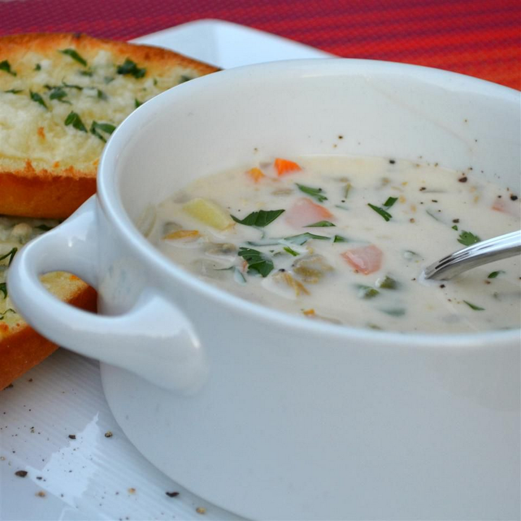

Back to Homepage
Clam Chowder

Description
This delicious clam chowder is cream-based and calls for the traditional chowder ingredients: onion, celery, potatoes, diced carrots, cream, and clams. A little red wine vinegar is added before serving for extra flavor.
Ingredients
- 2 cups cubed potatoes
- 1 cup diced carrots
- 1 cup diced celery
- 1 cup minced onion
- 3 (6.5 ounce) cans minced clams, drained with juice reserved
- Water to cover
- 3/4 cup butter
- 3/4 cup all-purpose flour
- 1 quart half-and-half cream
- 2 tablespoons red wine vinegar
- 1 1/2 teaspoons salt
- Ground black pepper to taste